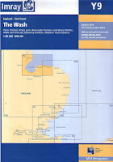
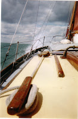
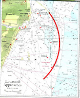
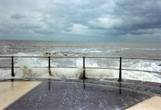
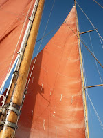
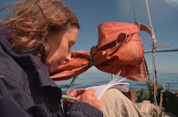

"Sir Walter Elliot, of Kellynch Hall, in Somersetshire, was a man who, for his own amusement, never took up any book but the Baronetage; there he found occupation for an idle hour, and consolation in a distressed one." If, for "baronetage" you substitute tidetables -- or better still charts -- then, at this time of year, I am your Sir Walter.
It's August, for heavens sake. The barometer is steady, the weather settled, winds are generally favourable, the crew are gathering -- all volunteers, not a pressed hand amongst them. I have a new chart. My lovely lovely older children are standing-by to stand-by on the caring front. So WHY am I still at my desk?

The annual Peter Duck sailing holiday is reliably the highlight of my year. It's short and it's oh, so sweet. The date is negotiated months in advance -- at Christmas usually . Not because flight reservations must be made or hotels booked but because they don't. All that is needed is that my son Bertie, my brother Ned, his daughter Ruth and I all synchronise our diaries and steadfastly refuse to allow an iota of deviation, variation or wavering from The Week. Once the Date is reached, then where we point our bows is in the lap of wind-gods, the wave-shapers and the siren singing of the harbour nymphs.
We talk about possible voyages, of course we do, when two or three are gathered together... Couldn't we visit Amsterdam? Come to Cornwall, Mum! Will this be the year we make it to the Baltic? That one's like a grail. We know perfectly well that we'd need several weeks, not just the seven days which is all that collective commitments will allow. So we give each other books about the Baltic when it's Christmas -- rather in the same way that I sold my bookshop customers sumptuous cookery or gardening books, complicit in the understanding that they were unlikely actually to re-landscape their 12' x 16' road-frontage patch into a sequence of water lily pools and cascading features...When I write, I surround myself with charts to give a sense of reality to my dreams.This year we were tending to agree that we might initially head for Calais and then consider turning east for Dunkirk or south for Boulogne. But what would you do if you met a migrant, Mum? Welcome him, her and all their friends and relatives on board, I hope.
 |
| The Euroscope at Lowestoft Ness - gives distances to all European capitals |
{kind=link}
WE're not demanding. Anything north of Lowestoft, even the briefest peep around the Yarmouth-Cromer bulge would be good. We nosed into Oulton Broad one year. There was no real room to sail but negotiating the railway bridges and the locks was fun.

WE don't wash much, we eat rather badly, there's no privacy and minimal comfort. I get seasick and quite anxious. There are at least two deck leaks that I haven't managed to trace. So why am I counting down the hours with such pounding anticipation?Yesterday I was in the middle of an intense conversation about Margery Allingham with a researcher for a forthcoming BBC Woman's Hour programme. I'd been hours entering figures into a business spread sheet (a private obligation that I'm not allowed to go away until Golden Duck figures are with the accountant) and, interspersed with that, I'd been tweeting and emailing for John's Campaign. It's all necessary and worthwhile etc etc but it's so sedentary and cerebral. There's no space for magic in my head and when a car turned into the drive and it was some of my children and grandchildren, arriving unexpectedly, I felt bewildered as I struggled to re-orientate myself away from the world of screens and marketings. That's why I need Peter Duck. Even a few hours on board begins to clear my head and reminds me who I am.

And, from tomorrow, I have a whole week -- and a chart.